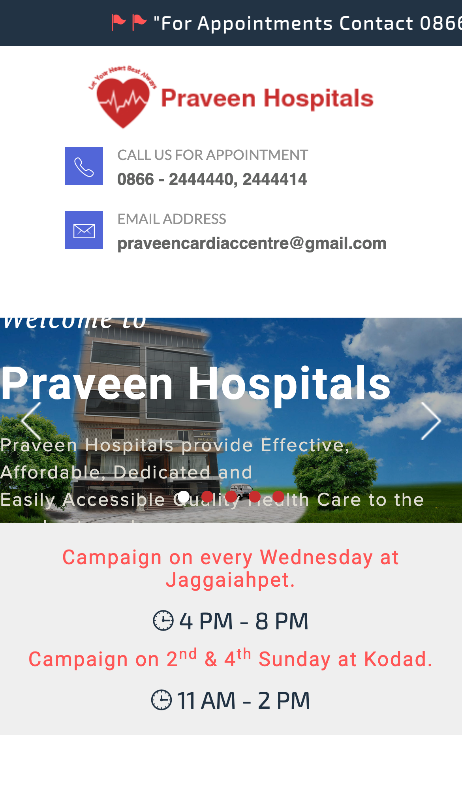
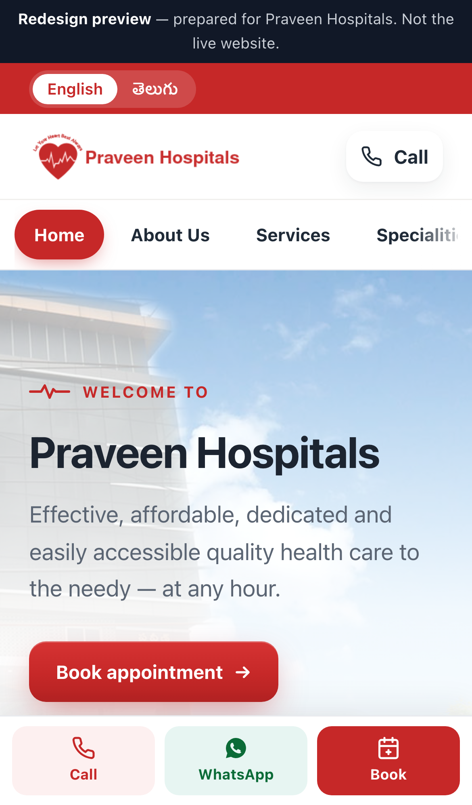
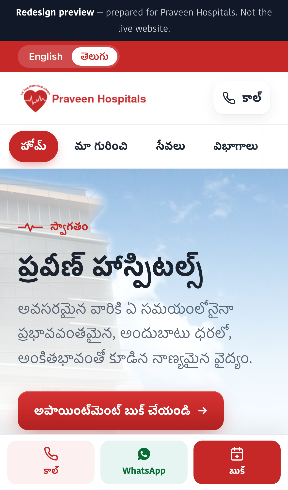

Mobile-first, Telugu + English, with WhatsApp appointment booking. Built from your own content and photos, and offered free of charge.
Prepared for Dr. M. Praveen, Praveen Hospitals, VijayawadaDate November 2026Contact jayachandrajarajapu@gmail.com
Your record deserves a better first impression
Since 2007, Praveen Hospitals has built one of the strongest cardiac records in the region. Most patients now find a hospital on their phone first, so the website is often the first thing they see. Today, it doesn't reflect the quality of care behind it.
11,500+angiograms
4,000stents · 99.6% success
2,000bypass surgeries · 98% success
100beds · cath-lab · modular OT
Figures as published on praveenhospitals.com.
On a phone: today vs. the new website

TodayCurrent websiteThe welcome message is cut off at the top and bottom of the slider, and the numbers can't be tapped to call.

NewNew websiteA clear headline, a Book appointment button, and Call / WhatsApp / Book always at the bottom of the screen.

NewSame page in TeluguOne tap switches every page between English and Telugu.
Things we noticed on the current website
These are all quick to fix, and the new website already fixes each one.
Phone numbers can't be tapped. None of the numbers on any page can be tapped to call, so a patient has to copy and dial them.
No online booking or WhatsApp. The only way to book is to call.
The email link is broken. The email address at the top of every page opens an error page.
The welcome message is cut off on phones (see the screenshot on page 1).
Typos in key places. "The senator whose foundation was laid in 2007…" (should be "centre") on Home and About, and "Radio Frequency ambulation" (should be "ablation") in the statistics.
Out-of-date details. "During the last 14 years" (it's now 19), and the copyright year is missing on most pages.
English only. There's no Telugu, although many patients come from Jaggaiahpet, Kodad and nearby towns.
Hard for Google to read. Most pages share the same title, and Google isn't given the address, phones or 24×7 hours in a format it reads.
What the new website does
For patients
Full Telugu and English, switched with one tap
Book appointment on WhatsApp: name, mobile, department
One-tap Call · WhatsApp · Book bar on every phone screen
24×7 emergency number always visible
Map with one-tap Google Maps directions
Builds trust
Outcome numbers shown clearly on the home page
Dr. Praveen's credentials: MD, DM (Cardiology), gold medal, NIMS
Doctors, mission, and all three centres
Photo gallery and the open-heart surgery video
Typos corrected and copy refreshed
Brings people in
Health camp calendar that shows the next date automatically: Jaggaiahpet (Wednesdays), Kodad (2nd & 4th Sundays)
Health checkup packages with enquiries on WhatsApp
All 12 schemes and a simple guide to cashless treatment: Aarogyasri, EHS, ECHS, all TPA insurance
Found on Google
Each page has its own title and description
Hospital details marked up for Google: address, map location, phones, 24×7 hours, specialities
Fast and lightweight on 4G
Readable for everyone: proper image descriptions and reduced motion for users who need it
Side by side
Area
Current website
New website
Calling
Numbers shown as plain text
Every number is tap-to-call; emergency number always visible
Booking
Phone only
WhatsApp booking form and WhatsApp buttons on every page
Language
English only
Telugu + English on every page
Phone layout
Welcome text cut off; contact details fill the first screen
Designed for phones first, with a fixed action bar
Outcomes
Spread across pages as plain text
Clear statistic cards on the home page
Health camps
Fixed text
Shows the next camp date automatically
Schemes
Plain list
All 12 schemes plus a cashless treatment guide
Checkups
One-line notice
Package cards with WhatsApp enquiry
Google
Same title on most pages
Unique titles and descriptions, plus hospital details Google can read
Email link
Broken
Works
Accuracy
"senator", "ambulation", "14 years", missing copyright year
Corrected
Next steps
Look at the preview on your phone. The link is in my email and opens with one tap, no login needed.
Your team reviews the Telugu text and confirms the front-desk WhatsApp number, plus checkup package details.
Go live on praveenhospitals.com within 7–10 days of approval, keeping your existing address and email. There is no cost.
Happy to walk you through it in 10 minutes. Reply to my email and I'll call at a time that suits you.
jayachandrajarajapu@gmail.com
The preview uses content and photos from the hospital's current website. It is hidden from Google and marked "preview" until you approve it.